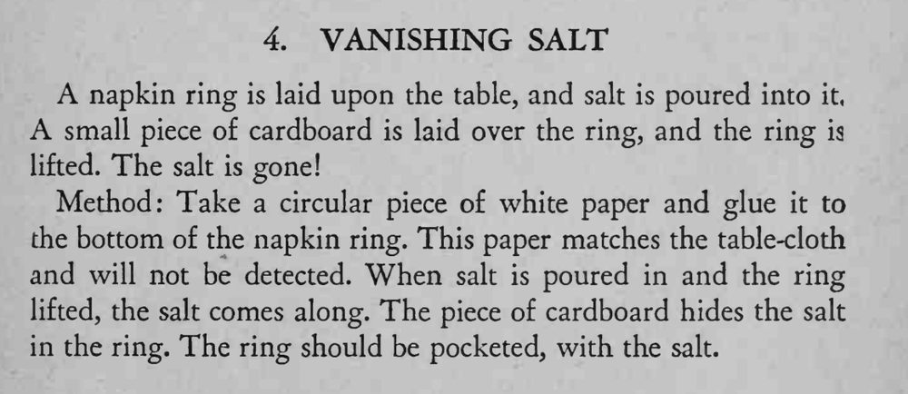

往餐巾环里倒满盐，盖上一块硬纸板，再拿起餐巾环，盐竟然不见了。
纸片要与桌布同色并粘牢，倒盐时别让盐粒漏到环外。

A napkin ring is laid upon the table, and salt is poured into small piece of cardboard is laid over the ring, and the ring is lifted. The salt is gone! Method: Take a circular piece of white paper and glue it to the bottom of the napkin ring. This paper matches the table-cloth and will not be detected. When salt is poured in and the ring lifted, the salt comes along. The piece of cardboard hides the salt in the ring. The ring should be pocketed, with the salt.